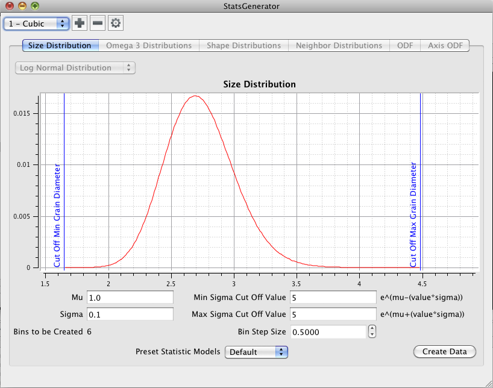
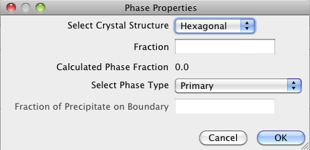
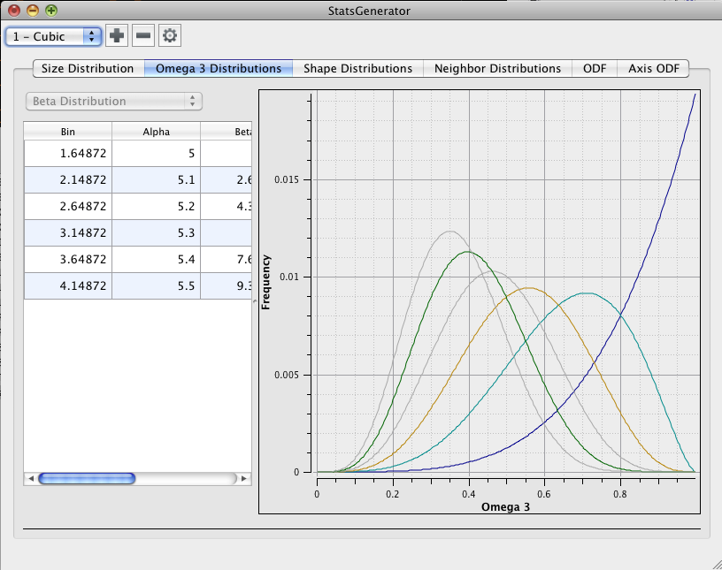
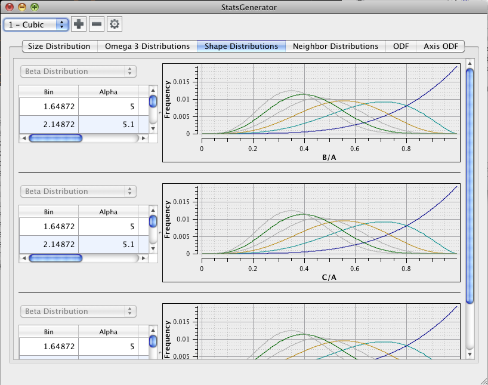
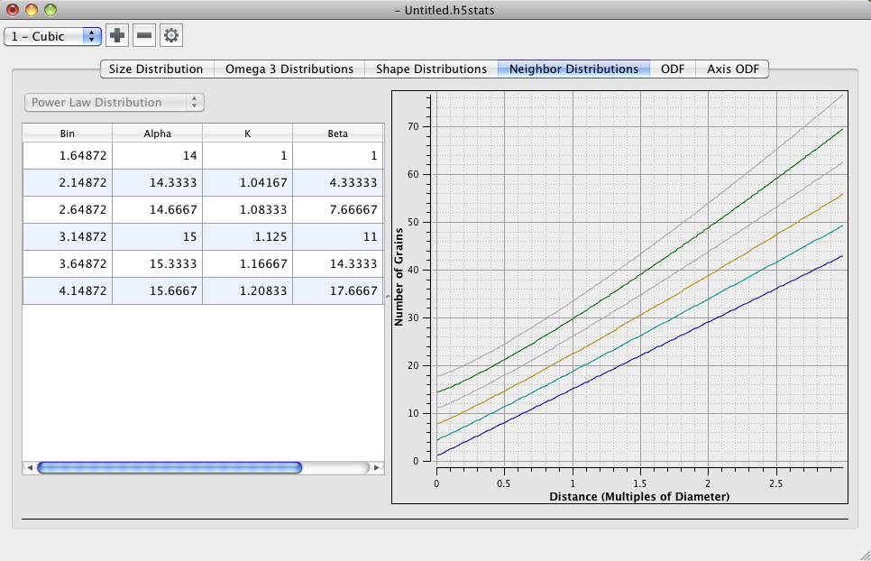
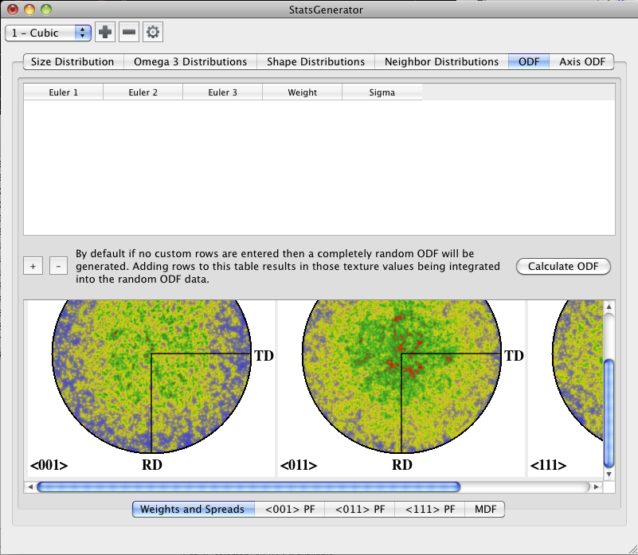
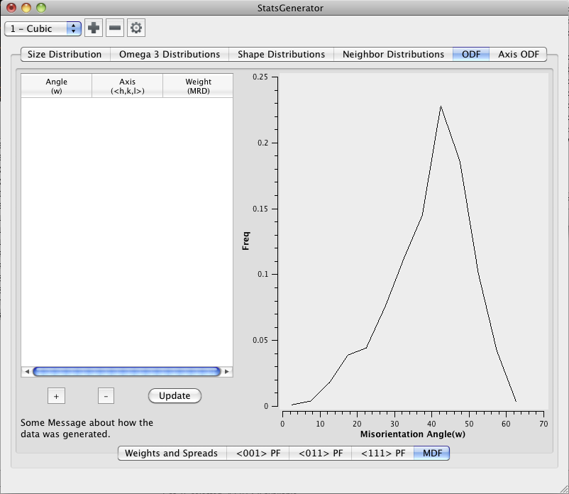
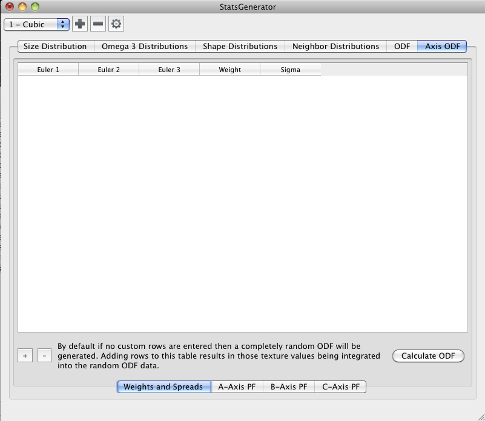

StatsGenerator
Size Distribution Tab

- Mu
This is the average value of the lognormal grain size distribution
- Sigma
This is the standard deviation of the lognormal grain size distribution
- Sigma Cut Off Value
This allows the user to truncate the distribution to remove very large grains
- Bin Step Size
This is the size of bin to use in segregating the grains into size classes for
correlating other statistics to grain size. Note that the Bins to be Created
is displayed in the bottom left corner.
- Preset Statistic Models
This allows the user to select a ‘morphological-type’ of microstructure to
populate the default data.
- Default – this populates the statistic tabs with generic random
data that may not create a ‘buildable’ microstructure. This option should
only be used if the user is going to enter the values on all the
statistics tabs themselves.
- Equiaxed – this populates the statistic tabs with data that is
designed to generate a random equiaxed microstructure.
- Rolled – this populates the statistic tabs with data that is
designed to generate a rolled microstructure with elongated grains with
user defined aspect ratios.
- Aspect Ratio 1 – this is the
aspect ratio between the dimensions of the grains in the rolling
direction and transverse direction, respectively.
- Aspect Ratio 2 – this is the
aspect ratio between the dimensions of the grains in the rolling
direction and normal direction, respectively. This value must be larger
than Aspect Ratio 1 or the default values will be wrong.
- Phase Properties
this is the area where the user can enter information about the phase for
which statistics are currently being generated. The Plus Button allows the
user to add a phase, the Minus Button allows the user to remove a phase and
the Wheel Button allows the user to edit the currently selected phase.

- Select Crystal Structure – this allows the user to specify the
crystal structure of the phase. Currently, the two options are Cubic and
Hexagonal.
- Fraction – this is the volume fraction of the phase. The Calculated
Phase Fraction is updated as more phases are added, by scaling the current
total of all the phases fractions to 1 (in case the user’s total is not
equal to 1 when finished).
- Select Phase Type – this specifies the type of the phase.
Currently, the two types of phases are Primary and Precipitate. Note that
there must be at least one Primary phase before any Precipitate phase can
be created or the Synthetic Builder will fail.
- Fraction of Precipitate on Boundary – if the phase type is set to
Precipitate, then the user must specify the number fraction of the
precipitates that are located on grain boundaries of the primary phase.
This value will be scaled to 1 if the user’s value is larger than 1. The
value is keyed to -1 for Primary phases.
- Create Data
This locks in the values the user has entered and populates the other tabs
with default values. The user can move through the other tabs and change any
default values if desired.
Omega3 Tab

- Bin – this column is calculated from the size distribution and
cannot be changed.
- Alpha – this is the alpha parameter of a Beta distribution.
Omega 3 is normalized and can only be between 0 and 1, so the Beta
distribution is a good fit
- Beta – this is the beta parameter of the Beta distribution.
- Color – this allows the user to change colors of the curves for
image creation or easier identification during stats generation
Shape Distribution Tab

- Bin – this column is calculated from the size distribution and
cannot be changed.
- Alpha – this is the alpha parameter of a Beta distribution. B/A,
C/A and C/B are normalized and can only be between 0 and 1, so the Beta
distribution is a good fit
- Beta – this is the beta parameter of the Beta distribution.
- Color – this allows the user to change colors of the curves for
image creation or easier identification during stats generation
Neighbor Distribution Tab

- Bin – this column is calculated from the size distribution and
cannot be changed.
- Alpha – this is the alpha parameter of a Power Law distribution.
- K – this is the exponent of a Power Law Distribution
- Beta – this is the beta parameter of a Power Law distribution.
- Color – this allows the user to change colors of the curves for
image creation or easier identification during stats generation
ODF Tab

- Weights and Spreads Sub-Tab
- Euler 1-3 – these are the
Euler angles that define an orientation that the user would like to
increase in weight.
- Weight – this is the weight in
MRD (multiples of random) to be assigned to the orientation listed
- Sigma – this is the spread to
use in blurring out the orientation chosen. The value corresponds to
the number of bins in Rodrigues (orientation) space it takes for the
MRD value entered in the Weight column to reduce to 0.0 (decreasing
quadratically from the bin of the entered orientation).
- Calculate ODF – this builds
the ODF and then creates pole figures (PFs) for the user to inspect.
- Pole Figure (PF) Sub-Tabs
- There are three PFs formed for
each of the crystal structures that can be chosen (though they are of
different directions for the different crystal structures).
- MDF Sub Tab This sub-tab will display the baseline MDF for the generated ODF. The
implemented algorithm proceeds by randomly sampling pairs of orientations from
the ODF and calculating the misorientation (axis-angle only). Only the angle
is plotted in the misorientation distribution plot. The user can also add
axis-angle pairs to increase in weight.

- Angle – this is the angle of the misorientation to
increase in weight.
- Axis – this is the axis of the misorientation to
increase in weight. If the crystal structure being used for the phase is Hexagonal,
then this axis is in the 3-index, orthogonal convention, not the true (hkil) convention.
- Weight – this is the weight in units of MRD
(multiples of random) of the entered misorientation.
Axis ODF Tab

- Weights and Spreads Sub-Tab
- Euler 1-3 – these are the
Euler angles that define an orientation that the user would like to
increase in weight.
- Weight – this is the weight in
MRD (multiples of random) to be assigned to the orientation listed
- Sigma – this is the spread to
use in blurring out the orientation chosen. The value corresponds to
the number of bins in Rodrigues (orientation) space it takes for the
MRD value entered in the Weight column to reduce to 0.0 (decreasing
quadratically from the bin of the entered orientation).
- Calculate ODF – this builds
the ODF and then creates pole figures (PFs) for the user to inspect.
- Pole Figure (PF) Sub-Tabs
- There are three PFs formed, which correspond to the location of the 3 principal axes of the grains to be generated (i.e a > b > c).